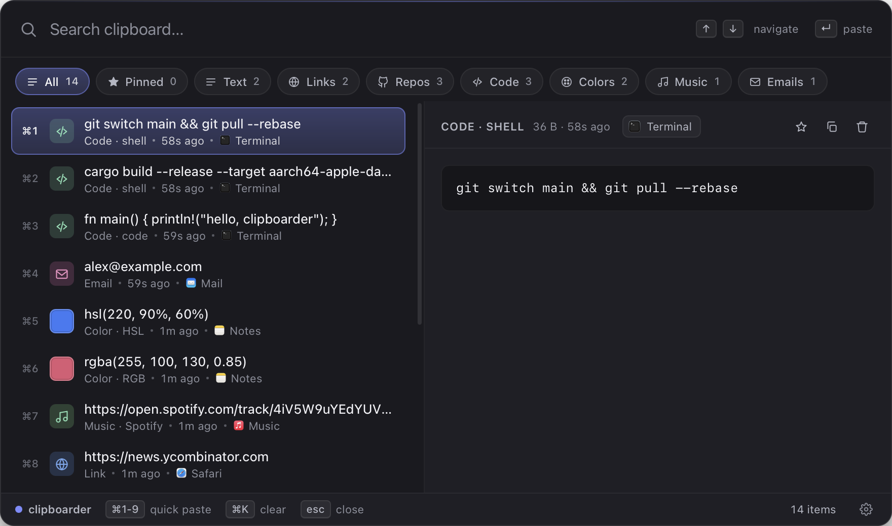
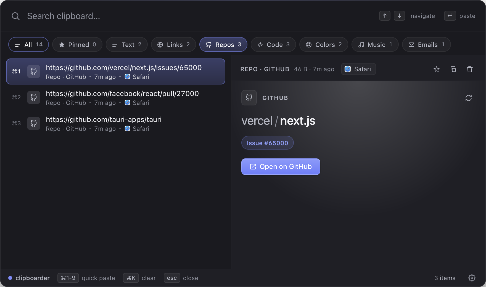
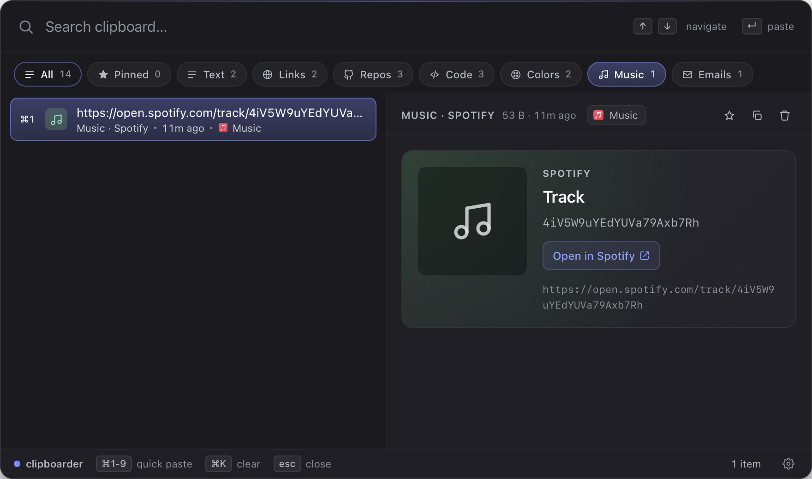
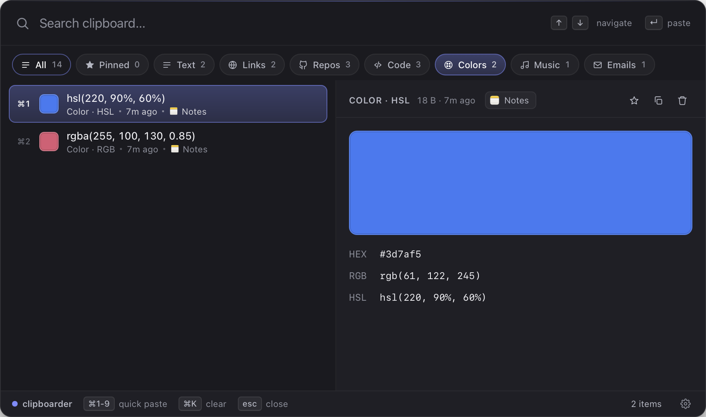
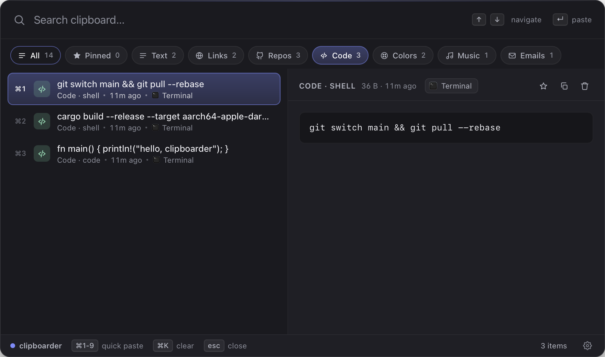
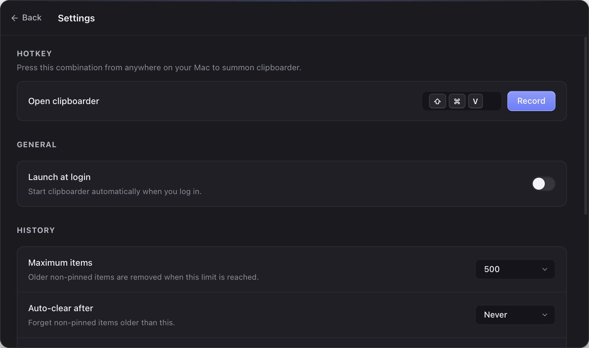

clipboarder¶
A faster, smarter, more beautiful clipboard manager for macOS. Captures everything you copy — text, links, code, colors, PDFs, music — and makes it searchable in milliseconds.

Why clipboarder¶
Instant search¶
SQLite FTS5 with bm25 ranking. Sub-millisecond results across thousands of items, even on a cold cache.
Smart classification¶
Every copy is auto-tagged at capture time: text, URL, email, code, color, image, file, PDF, music link, video link, repo.
Rich previews¶
Color swatches with HEX/RGB/HSL. Inline PDF embed. Music/video cards for Spotify, Apple Music, YouTube, SoundCloud. Repo cards for GitHub/GitLab.
Source app icons¶
Each row shows the real icon of the app you copied from — Safari, VS Code, Figma — extracted live via NSWorkspace.
Quick-paste¶
⌘1–⌘9 paste the top 9 results directly into the previously-focused app, no extra keystrokes.
Private by default¶
All data stays local at ~/Library/Application Support/com.clipboarder.app/. No telemetry. No cloud. No account.
A preview for every kind¶





How It Works¶
NSPasteboard ─▶ Watcher ─▶ Classify + hash ─▶ SQLite + FTS5
│
⌘⇧V hotkey ─▶ Tauri IPC ─▶ React frontend ─◀──┘
│
▼
Paste-back via CGEventPost
into the previously-focused app
A Rust thread watches NSPasteboard change-count and reads every clipboard event. Content is classified, deduplicated, and persisted. The overlay is a frameless transparent Tauri window that floats above other apps and joins every macOS Space. Selecting an item writes it back to the pasteboard, hides the overlay, and synthesizes ⌘V into the previously-focused app.
Get Started¶
- Installation — one-liner installer or manual
.dmg - Quickstart — your first 60 seconds with clipboarder
- Keyboard shortcuts — the moves that make it fast
- Settings — every knob, explained
Open Source¶
clipboarder is MIT-licensed and lives on GitHub.
- File a bug or request a feature in Issues
- See CONTRIBUTING for the development setup